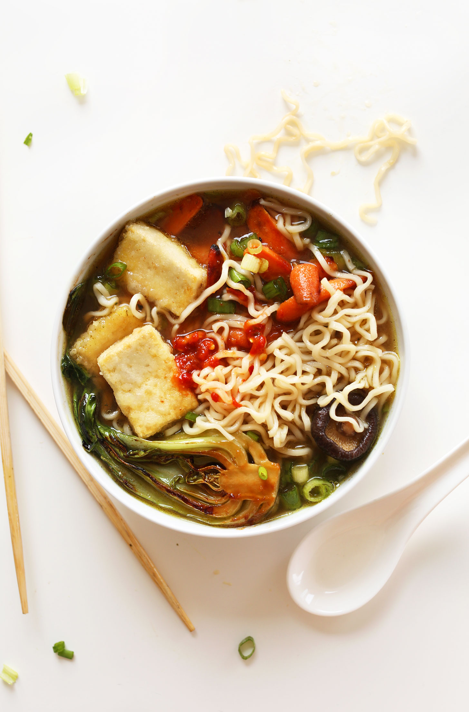

Ramen

The origin of ramen is traced back to Yokohama Chinatown in the early 20th century. The word "ramen" is a Japanese
borrowing of the Chinese word 拉麵 (lāmiàn), meaning 'pulled noodles'. The dish evolved from southern Chinese noodle
dishes, reflecting the demographics of Chinese settlers in Yokohama. Ramen gained popularity in Japan, especially during
food shortages following World War II. In 1958, instant noodles were invented by Momofuku Ando, further popularizing the
dish. Today, ramen is a cultural icon in Japan, with many regional varieties and a wide range of toppings.
The last few
decades have seen a proliferation of regional ramen variations in Japan, known as gotouchi ramen. Notable examples include
Sapporo's rich miso ramen, Hakodate's salt-flavored ramen, Kitakata's thick, flat noodles in pork-and-niboshi broth,
Tokyo-style ramen with soy-flavored chicken broth, Yokohama's Ie-kei ramen with soy flavored pork broth, Wakayama's soy
sauce and pork bone broth, and Hakata's milky, pork-bone tonkotsu broth. Ramen is offered in various establishments and
locations, with the best quality usually found in specialist ramen-ya restaurants. Ramen's popularity extends beyond Japan,
as it is known as rìshì lāmiàn in China, ramyeon in Korea, and has even made its way into Western restaurant chains. I
nstant ramen was exported from Japan in 1971 and has since gained international recognition.
Ingredients
Ramen
- 1 Tbsp olive oil
- 1 Garlic bulb
- 1 3-inch piece of ginger
- 1 Medium yellow onion
- 6 Cups vegetable stock
- 2 Tbso tamari or soy sauce
- 0.5 Ounces dehydrated shiitake mushrooms
- 1 Tbsp white or yellow miso paste
- 1 Tsp Toasted sesame oil
- 8 Ounces ramen noodles
Toppings (optional)
- 1/2 Cup chopped green onion
- 10 Ounces extra-firm tofu
- Miso glazed carrots
- Miso glazed baby bok choy
- Soft boiled egg
Making the Ramen
- Heat a large pot over medium-high heat
- Once hot, add oil, garlic, ginger, & onion. Saute, stirring occasinoally for 5-8 min or until the onion is
slightly seared
- Add 1 cup of vegetable broth to deglaze the bottom of the pot. Use a wooden spoon to un-stick any bits that are
stuck to enhance the flavor of the broth
- Add remaining 5 cups of vegetable broth, tamari or soy sauce, & dehydrated mushrooms - stir
- Bring to a simmer over medium heat, then reduce heat to low, and cover. Simmer on low for at least 1 hour, up to 2-3,
stirring occasinoally. The longer it cooks, the more the flavor will deepen and develop.
- Taste broth and adjust seasoning as needed, adding more soy sauce or sesame oil if needed. Add the miso paste now.
- When ~30mins from serving, prepare any toppings
- NOODLES: Fill a lrage saucepan or pot with water and bring to a boil. Once boiling, add ramen noodles, and cook
according to package instructions. Usually about 4-5min, drain, & set aside.
- Strain broth and reserve mushrooms for serving
- Add broth and noodles to a bowl, then add your toppings, and serve!